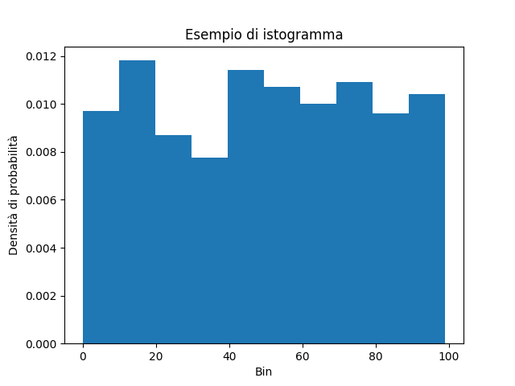

8 - Visualizzare i dati in Python¶
Finora ci siamo limitati a visualizzare dati e risultati ottenuti usando prima la riga di comando, e poi i metodi forniti dai notebook Jupyter. Tuttavia, è chiaro come questo modo di procedere sia limitante: cosa ne è di tutti i coloratissimi grafici che possiamo ammirare in siti ed articoli scientifici?
Nella realtà, per ottenerli dovremo necessariamente integrare il nostro ambiente di lavoro con altre librerie: ne esistono diverse, ma la più importante ed utilizzata è senza ombra di dubbio Matplotlib, cui si può affiancare Seaborn, che tratteremo in una delle prossime lezioni.
8.1 - Installazione della libreria¶
Per prima cosa, installiamo le libreria. Al solito, potrete consultare le diverse opzioni in appendice; qui riportiamo l'opzione di installazione mediante pip:
pip install matplotlib
Per importare la libreria all'interno del nostro codice, usiamo un alias:
import matplotlib.pylot as plt # import di matplotlib
L'API pyplot
Sottolineamo l'uso dell'API pyplot per Matplotlib al posto dell'API "standard". In tal modo, avremo a disposizione una serie di funzioni per il plot che ricorda molto quella usata dal MATLAB.
8.2 - Il primo plot¶
Dopo aver installato la libreria, proviamo a creare il nostro primo plot. Per farlo, possiamo usare uno script, un terminale o un notebook, ed inserire il seguente codice:
rng = np.random.default_rng(42)
x = np.arange(1, 6)
y = rng.integers(low=0, high=10, size=5)
fig, ax = plt.subplots()
ax.plot(x, y)
plt.show()
Se tutto è andato per il verso giusto, dovremmo vedere a schermo questa immagine:

Suggerimento
Dovreste vedere a schermo esattamente questa immagine perché nella generazione dei numeri casuali, che avviene alla riga 1, viene usato il seed 42. Se provate ad usarne un altro, vedrete un'altra immagine.
Cerchiamo adesso di approfondire i concetti di funzionamento di Matplotlib.
8.3 - Figure ed assi¶
Alla base del funzionamento di Matplotlib abbiamo quattro classi fondamentali.
Per prima cosa, ci sono le Figure, che rappresentano l'intera figura mostrata da Matplotlib. Questa, ovviamente, terrà traccia di tutto ciò che vi è al suo interno, e potrà contenere un numero arbitrario degli elementi che vedremo a breve.
Abbiamo poi gli Axes, oggetti che rappresentano il plot vero e proprio, ovvero la regione dell'immagine all'interno del quale vengono "disegnati" i dati. La relazione tra Figure ed Axes è strettamente gerarchica: una Figure può avere diversi Axes, ma ogni Axes appartiene esclusivamente ad una Figure.
All'interno di un oggetto Axes troviamo poi due o tre oggetti di tipo Axis, ognuno dei quali rappresenta l'asse vero e proprio (in altri termini, \(x\), \(y\) e, per le figure tridimensionali, \(z\)). Gli oggetti Axis ci permettono quindi di definire gli intervalli dati, l'eventuale griglia, e via discorrendo.
Attenzione
Fate attenzione a non confondere gli Axes con gli Axis, nonostante l'infelice scelta dei nomi!
In ultimo, abbiamo gli artist, che rappresentano tutto quello che è possibile visualizzare su una figura, incluso testo, label, plot, numeri, e via discorrendo.
Torniamo brevemente al precedente snippet. Dopo aver importato i package necessari, ed aver creato un vettore di numeri interi casuali, abbiamo creato una Figure ed un Axes usando la funzione subplots():
fig, ax = plt.subplots()
A quel punto, abbiamo effettuato il plot dei valori di x ed y su nostro oggetto Axes:
ax.plot(x, y)
In ultimo, abbiamo mostrato a schermo la figura usando la funzione plt.show().
Vediamo adesso qualche esempio maggiormente "corposo".
8.4 - Esempi con Matplotlib¶
8.4.1: Plot di più funzioni¶
In questo esempio, vogliamo mostrare sullo stesso Axes il plot di due diverse funzioni, in particolare una retta ed un seno. Ricordiamo che questo è possibile grazie al fatto che i plot vengono considerati degli artist, e quindi è possibile inserirne un numero arbitrario.
Vediamo come fare. Per prima cosa, definiamo i nostri dati:
x = np.arange(0., 10., 0.01)
y_1 = 1 + 2 * x
y_2 = np.sin(x)
Notiamo che stiamo usando un unico vettore per le ascisse, di modo da fornire una base comune al nostro plot. Adesso, creiamo la nostra Figure con relativo Axes, ed effettuiamo il plot di entrambe le funzioni.
fig, ax = plt.subplots()
ax.plot(x, y_1, label='Retta')
ax.plot(x, y_2, label='Funzione sinusoidale')
Notiamo che abbiamo impostato un parametro label che indica l'etichetta assegnata ai due plot; questa sarà utilizzata più tardi per generare la legenda. Passiamo adesso ad impostare il titolo e le label sugli assi \(x\) ed \(y\) usando rispettivamente le funzioni set_title, set_xlabel e set_ylabel:
ax.set_title('Plot di due funzioni matematiche')
ax.set_xlabel('Asse x')
ax.set_ylabel('Asse y')
Usiamo adesso la funzione grid() per mostrare una griglia sulla figura, e la funzione legend() per far apparire la legenda che descrive le funzioni visualizzate.
ax.legend()
ax.grid()
In ultimo, mostriamo a schermo la figura con la funzione show():
plt.show()
Il risultato ottenuto è mostrato in figura.

8.4.2: Subplot¶
Abbiamo detto che possiamo definire più Axes per un'unica Figure; per farlo, possiamo parametrizzare la funzione subplots(i, j), in maniera tale che vengano creati \(i \times j\) plot all'interno della stessa figura.
Per creare 2 subplot in "riga", ad esempio, usiamo questa istruzione:
fig, (ax_1, ax_2) = plt.subplots(2, 1)
Possiamo poi usare la funzione suptitle() per dare un titolo all'intera figura:
fig.suptitle('Due subplot di più funzioni matematiche')
A questo punto, procediamo ad effettuare i plot sui relativi assi nella solita maniera:
# Primo subplot
ax_1.plot(x, y_1, label='Retta')
ax_1.set_ylabel('Asse y')
ax_1.legend()
ax_1.grid()
# Secondo subplot
ax_2.plot(x, y_2, label='Funzione sinusoidale')
ax_2.set_xlabel('Asse x')
ax_2.set_ylabel('Asse y')
ax_2.legend()
ax_2.grid()
# Mostro la figura
plt.show()
Il risultato sarà simile a quello mostrato in figura:

8.4.3: Rappresentazione di un istogramma¶
Abbiamo già parlato degli istogrammi in precedenza. Tuttavia, la loro vera potenza sta nella rappresentazione visiva che offrono, ed in tal senso Matplotlib ci viene in soccorso offrendoci la funzione hist.
Per prima cosa, creiamo un vettore di interi.
x = rng.integers(low=0, high=100, size=1000)
Al solito, creiamo la nostra figura, ed usiamo la funzione hist passandogli il vettore x creato in precedenza ed il parametro density, che ci permetterà di normalizzare l'istogramma (ovvero, fare in modo tale che la sommatoria dei singoli bin sia esattamente pari ad 1).
fig, ax = plt.subplots()
ax.hist(x, edgecolor='black', linewidth=1.2, density=True)
Notiamo anche l'uso dei parametri edgecolor, che permette di impostare il colore del bordo di ciascuna barra dell'istogramma, e linewidth, che consente di specificarne lo spessore.
Al solito, usiamo i metodi opportuni per impostare titolo e label degli assi, e mostriamo la figura.
ax.set_xlabel('Bin')
ax.set_ylabel('Conteggio dei singoli elementi')
ax.set_title('Esempio di istogramma')
plt.show()
Il risultato sarà simile a quello mostrato nella figura successiva.
